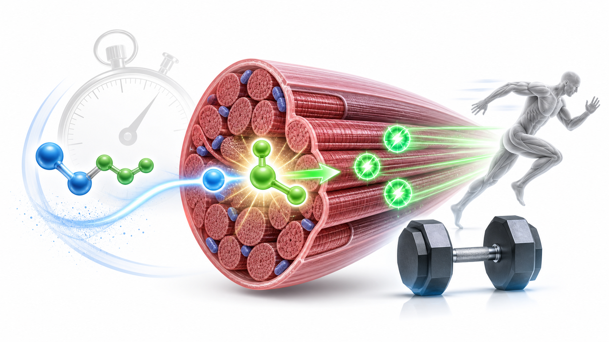
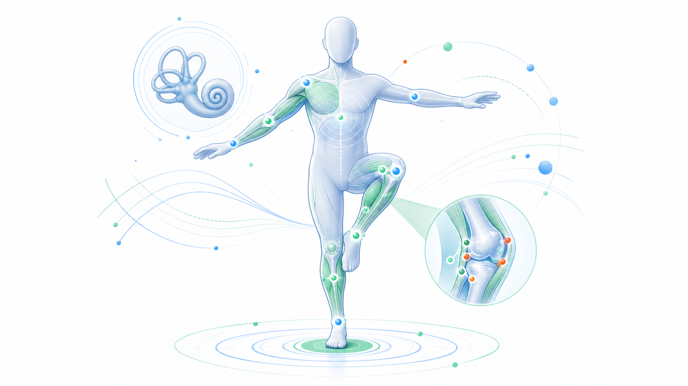

Day 22 · 能量系统-ATP-PCr系统

ATP-PCr 系统是极短时高强度动作的即时供能系统。ATP 是肌肉直接使用的能量货币，PCr 把磷酸基团快速转给 ADP，让 ADP 重新变回 ATP。
判断题干时抓两件事: 是否 0-10 秒内全力输出，是否需要最高功率。单次大重量、起跑加速、跳跃和投掷优先想到 ATP-PCr；想保持下一组输出质量，就需要 3-5 分钟让 PCr 接近完全恢复。
打开 Day22 原学习页 →
ATP-PCr 系统是极短时高强度动作的即时供能系统。ATP 是肌肉直接使用的能量货币，PCr 把磷酸基团快速转给 ADP，让 ADP 重新变回 ATP。
判断题干时抓两件事: 是否 0-10 秒内全力输出，是否需要最高功率。单次大重量、起跑加速、跳跃和投掷优先想到 ATP-PCr；想保持下一组输出质量，就需要 3-5 分钟让 PCr 接近完全恢复。
打开 Day22 原学习页 →



今日新知识 Day22：ATP-PCr 系统为什么适合 0-10 秒爆发动作？
今日新知识 Day22：为什么最大力量训练常建议组间休息 3-5 分钟？
Day21：用一句话把力、力矩、动作模式和损伤风险串起来。
Day19：新手力量快速增长但肌肉没明显变大，先解释哪个机制？
Day15：为什么力不能只说“多大”，还要说“朝哪里”？
Day08：肌梭和 GTO 最关键区别是什么？
综合：10 秒冲刺后只休 30 秒再冲，第二次速度下降，如何用 Day22 解释？
综合：跳跃前快速下蹲为什么可能提高起跳，但疲劳时也可能变危险？
| 易错点 | 错因 | 修正句 |
|---|---|---|
| 把 ATP-PCr 当成乳酸系统 | 只记得“无氧”，没看持续时间。 | ATP-PCr 是 0-10 秒即时快供能；较长高强度才更偏糖酵解。 |
| 以为短休一定更有效 | 把累和训练质量混为一谈。 | 力量和爆发训练要恢复 PCr，常需 3-5 分钟维持峰值输出。 |
| 只看重量，不看加速度 | 忽略 F=ma 和速度质量。 | 爆发动作要看力和加速度，重量相同也可能输出质量不同。 |
| 把肌梭和 GTO 混掉 | 把长度变化和张力变化都叫“感觉”。 | 肌梭看长度和速度；GTO 看肌腱张力。 |